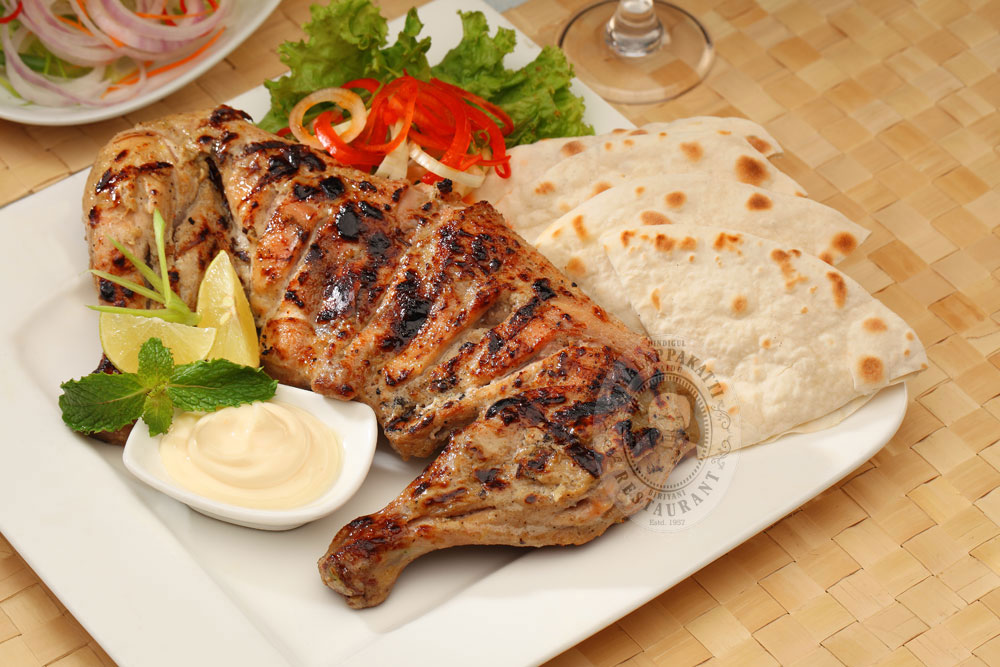

Our Menu
KABULI PALAO
 A generous portion of Basmati rice cooked in a special blend of saffron, black pepper, cardamom, coriander and cumin, topped with raisins, nuts and julienned carrots.($12.95)
A generous portion of Basmati rice cooked in a special blend of saffron, black pepper, cardamom, coriander and cumin, topped with raisins, nuts and julienned carrots.($12.95)
MANTOO
 Lightly spiced fragrant ground beef filled dumplings topped with yougurt sauce and lentils ($11.45)
Lightly spiced fragrant ground beef filled dumplings topped with yougurt sauce and lentils ($11.45)
LAMB SHANK
A generous portion lamb marinated in garlic, coriander seeds, lemon juice, turmuric and touch of cayenne pepper. Served with Badenjan Borani, Basmati rice, Salata and Afghan Bread. ($23.95)
CHICKEN KABAB

Chicken marinated overnight in yogurt, turmeric, garlic and a touch of cayenne pepper. Served with an optional piece of Badenjan Borani.($18.25)
LAMB KABAB
Chunks of beef fillet marinated in a blend of ground coriander, garlic and freshly ground black pepper. Served with an optional piece of Badenjan Borani. ($19.95)
BOLANI
Turnovers filled with scallions, cilantro and potato, served with yogurt-garlic dip. ($9.95)
SECIAL DRINK
Yogurt, minced cucumbers, onions and mint, served with Afghan bread(optional). ($5.95)
FIRNI DESSERT (MILK PUDDING)
Custard pudding flavored with cardamom and rosewater and topped with ground pistachios. ($5.25)